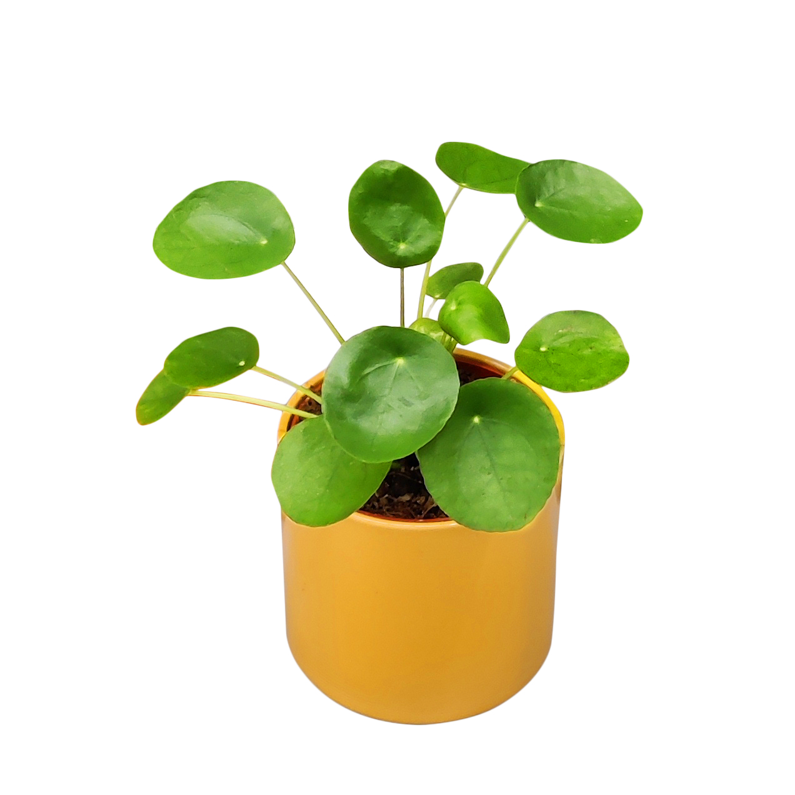
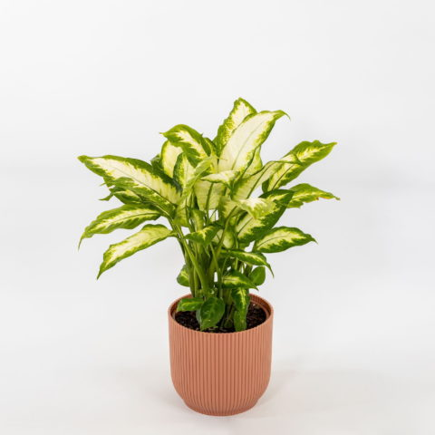
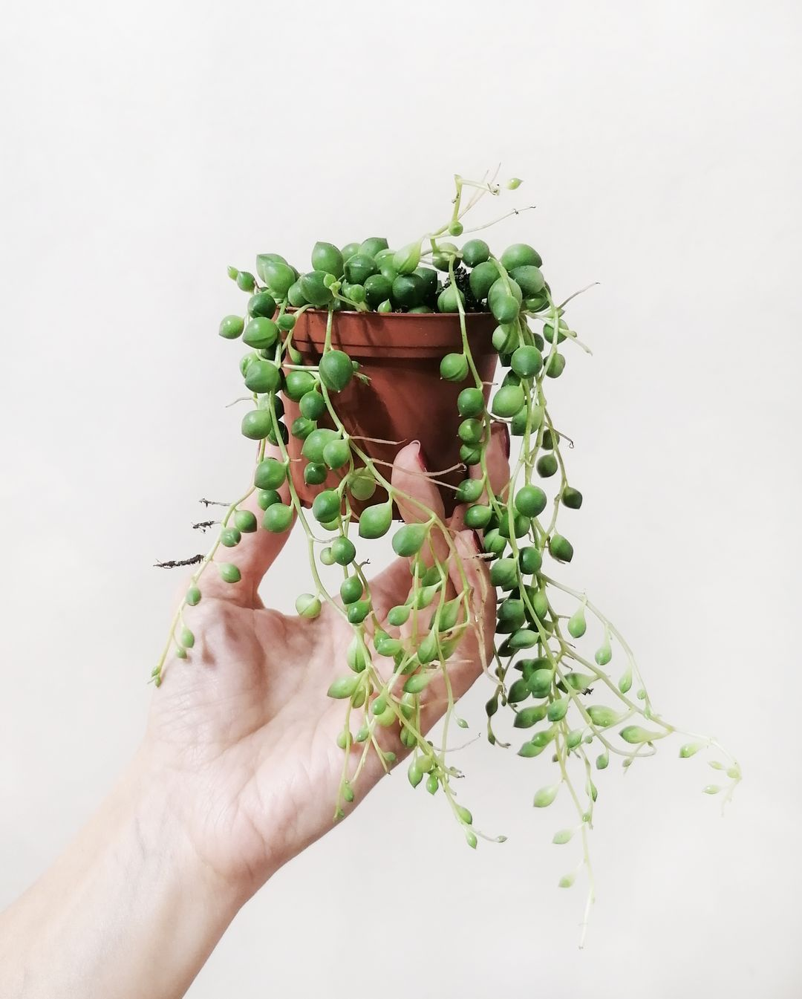
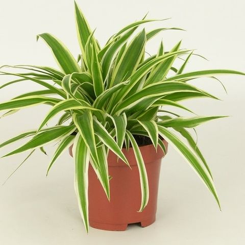

Può crescere in altezza fino ai 20 metri.
|
|
|
| Origine: Messico | |
| La Monstera deliciosa è una pianta sempreverde e rampicante della famiglia delle Araceae diffusa nella zona compresa dal Messico al Canale di Panama. Può crescere in altezza fino ai 20 metri. |
|
| Prezzo: 50€ | |
| Quantità disponibile: 2 |

|
|
| Origine: Mozambico | |
| La Crassula ovata, comunemente chiamata albero di Giada è una pianta succulenta della famiglia Crassulaceae. | |
| Prezzo: 4€ | |
| Quantità disponibile: 4 |
|  | |
| Origine: Cina | |
| La Pilea peperomioides nota pure come pianta cinese del denaro, è una pianta di foglie rotonde di 10cm di diametro in un lungo picciolo. |
|
| Prezzo: 7€ | |
| Quantità disponibile: 8 |
| Origine: Sudafrica | |
| La Portulacaria afra è una pianta succulenta della famiglia Didiereaceae. Si presenta come un arbusto succulento e sempreverde con fusto apparentemente legnoso e una chioma tondeggiante e disordinata. |
|
| Prezzo: 5€ | |
| Quantità disponibile: 16 |
| Origine: Penisola arabica | |
| La Aloe vera è una pianta succulenta della famiglia delle Asphodelaceae. Questa pianta succulenta perenne a portamento arbustivo, può arrivare sino a un metro di alto. |
|
| Prezzo: 20€ | |
| Quantità disponibile: 32 |
|  | |
| Origine: Messico | |
| La Diffenbachia seguine è una especie di pianta sempreverde della famiglia Araceae. Raggiunge un'altezza compresa tra 1 e 3 metri. È caratterizzata da un fusto carnoso e eretto, dove si sviluppano lunghi piccioli che si estendono in un diametro fino a 60 cm. |
|
| Prezzo: 20€ | |
| Quantità disponibile: 64 |
|  | |
| Origine: Namibia | |
| La Curio rowleyanusè una pianta angiosperma dicotiledone della famiglia delle Asteraceae. È una succulenta dai lunghi fusti sottili, striscianti, con caratteristiche foglie sferiche, di circa 5-6 mm di diametro. |
|
| Prezzo: 35€ | |
| Quantità disponibile: 128 |

|
|
| Origine: Messico | |
| La Opuntia ficus-indica è una pianta succulenta arborescente appartenente alla famiglia delle Cactacee. Può raggiungere anche i 4-5 metri di altezza. |
|
| Prezzo: 80€ | |
| Quantità disponibile: 256 |
|  | |
| Origine: Sudafrica | |
| La Chlorophytum comosum è una pianta sempreverde con foglie lunghe e sottili che si sviluppano da un fusto carnoso. Riesce a estendersi fino a 60 cm di diametro, creando un aspetto lussureggiante. |
|
| Prezzo: 4.99€ | |
| Quantità disponibile: 512 |
| Origine: Stati Uniti | |
| La Agave deserti è una pianta succulenta della famiglia delle Asparagaceae. Forma una rosetta di foglie carnose di colore verde-grigiastro, lunghe tra i 20 e i 70 cm e larghe tra i 4,5 e i 10 cm, con spine affilate lungo i bordi e alle estremità. | |
| Prezzo: 2.99€ | |
| Quantità disponibile: 1024 |

|
|
| Origine: Malasia | |
| La Epipremnum aureumcomunemente nota come pothos, è una pianta sempreverde della famiglia delle Araceae. Una liana può raggiungere i 20 m di altezza, con fusti fino a 4 cm di diametro. Si arrampica utilizzando radici aeree che si agganciano ai rami degli alberi. |
|
| Prezzo: 10€ | |
| Quantità disponibile: 2048 |